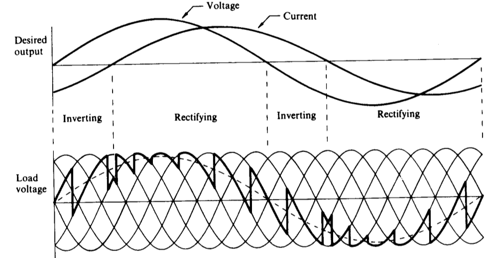
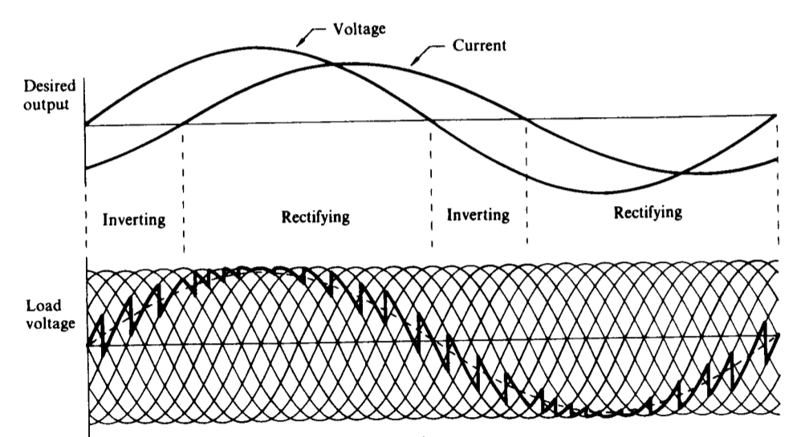

class: center, middle # EE-463 STATIC POWER CONVERSION-I # A Few Important Converters ## Ozan Keysan ## [keysan.me](http://keysan.me) ### Office: C-113 <span class="meta">•</span> Tel: 210 7586 --- ## What's the name of this rectifier? -- <img src="http://www.wikizero.org/index.php?q=aHR0cHM6Ly91cGxvYWQud2lraW1lZGlhLm9yZy93aWtpcGVkaWEvY29tbW9ucy82LzY3LzZfcHVsc2VfYnJpZGdlX3dpdGhvdXRfaW5kdWN0YW5jZS5wbmc" alt="Drawing" style="width: 600px;"/> --- ## 6-pulse (Diode or Thyristor) Rectifier <img src="http://www.wikizero.org/index.php?q=aHR0cHM6Ly91cGxvYWQud2lraW1lZGlhLm9yZy93aWtpcGVkaWEvY29tbW9ucy82LzY3LzZfcHVsc2VfYnJpZGdlX3dpdGhvdXRfaW5kdWN0YW5jZS5wbmc" alt="Drawing" style="width: 600px;"/> --- ## What's the name of this rectifier? -- <img src="http://www.wikizero.org/index.php?q=aHR0cHM6Ly91cGxvYWQud2lraW1lZGlhLm9yZy93aWtpcGVkaWEvY29tbW9ucy82LzY1LzEyX3B1bHNlX2JyaWRnZS5wbmc" alt="Drawing" style="width: 800px;"/> --- # 12-pulse Rectifier <img src="http://www.wikizero.org/index.php?q=aHR0cHM6Ly91cGxvYWQud2lraW1lZGlhLm9yZy93aWtpcGVkaWEvY29tbW9ucy82LzY1LzEyX3B1bHNlX2JyaWRnZS5wbmc" alt="Drawing" style="width: 700px;"/> ### Reading: Power Electronics, Lander, Section 2-9 --- # 12-pulse Rectifier: Source Side <img src="http://www02.abb.com/global/gad/gad02181.nsf/0/e3c284c525195d08c12570ab0034c7c4/$file/12-pulse+converter+700x525.jpg" alt="Drawing" style="width: 550px;"/> ## Two secondary windings: Delta and Wye connected --- # How can you obtain 24 pulse, or 48 pulse? -- ##Phase Shifting Transformer -- <img src="http://www.ee.co.za/wp-content/uploads/2015/01/09-mr-rectifier-transformers-fig.11.gif" alt="Drawing" style="width: 600px;"/> --- # 12-pulse Rectifier: Devices <img src="http://www.ee.co.za/wp-content/uploads/2015/01/09-mr-rectifier-transformers-fig.08.gif" alt="Drawing" style="width: 700px;"/> --- # 12-pulse Rectifier: Output ## Can you plot the voltage waveform? -- <img src="http://www.ee.co.za/wp-content/uploads/2015/01/09-mr-rectifier-transformers-fig.09.gif" alt="Drawing" style="width: 800px;"/> --- # 12-pulse Rectifier: Input -- <img src="http://people.ucalgary.ca/~aknigh/vsd/hp/images/figs/12pulse_line_currents.gif" alt="Drawing" style="width: 700px;"/> --- # What about harmonics? -- - ## 6 pulse: -- 5th, 7th harmonics (no triple harmonics) -- - ## 12 pulse: -- 11th, 13 th harmonics ## \\(h = n * 12 ± 1\\) -- - ## 18 pulse: -- 17th, 19th -- - ## 24 pulse: -- 23rd, 25th --- # What about harmonics? <img src="https://www.yaskawa.com/syndicationAssets/RTEmagicC_CTL1406_WEB_IMG_DEPT_TU2_Harmonics_Siemens-x5_front_end_harmonic_comparison.jpg.jpg" alt="Drawing" style="width: 600px;"/> --- # HVDC Rectifiers --- # How does it look like? <img src="http://www.wikizero.org/index.php?q=aHR0cDovL3VwbG9hZC53aWtpbWVkaWEub3JnL3dpa2lwZWRpYS9jb21tb25zLzAvMDQvUG9sZV8yX1RoeXJpc3Rvcl9WYWx2ZS5qcGc" alt="Drawing" style="width: 600px;"/> #### 12-pulse thyristor converter for Pole 2 of the HVDC Inter-Island between the North and South Islands of New Zealand. --- <img src="https://www.siemens.com/press/pool/de/pressebilder/2016/energymanagement/300dpi/IG2016080059EMEN_300dpi.png" alt="Drawing" style="width: 700px;"/> - ### [ABB HVDC](https://www.youtube.com/watch?v=UBu3_saPuOs) - ### [Siemens HVDC](https://www.youtube.com/watch?v=uLKfDjUfor4) - ### [Thyristors – The heart of HVDC](https://www.abb-conversations.com/2015/11/thyristors-the-heart-of-hvdc/) --- # Even more pulses? -- ## 24 Pulse <img src="http://www.scielo.org.co/img/revistas/iei/v31sup2/v31sup2a19f6.jpg" alt="Drawing" style="width: 500px;"/> --- # Even more pulses? ## 48 Pulse <img src="https://www.degruyter.com/view/j/ijeeps.2013.14.issue-2/ijeeps-2012-0040/graphic/ijeeps-2012-0040_figure1.gif" alt="Drawing" style="width: 400px;"/> --- # Frequency Conversion: -- # Cycloconverters -- ### Converts AC to (lower frequency) AC -- ### No need to have DC-link -- ### Used in MW-sized motor drives (ships, mines, traction) - ### [ABB Brochure](https://library.e.abb.com/public/2abc426982e203e6c1256e4d004deb49/ACS%206000c%20Cycloconverter.pdf), [discontinued](http://www.mena.abb.com/industries/db0003db002811/214b39527235c875c1257b270083a382.aspx) - ### [Siemens Sinamics](http://w3app.siemens.com/mcms/infocenter/dokumentencenter/ld/InfocenterLanguagePacks/sinamics-sl150/ws-sinamics-sl150-en.pdf) ### Reading: Power Electronics, Lander, Chapter 5 --- # Cycloconverters -- ## Simplest Case ### Single Phase to Single Phase <img src="https://www.electrical4u.com/images/2017/january/1485787482.PNG" alt="Drawing" style="width: 700px;"/> --- # Cycloconverters ## Simplest Case ### Single Phase to Single Phase <img src="https://www.electrical4u.com/images/2017/january/1485787784.PNG" alt="Drawing" style="width: 600px;"/> --- # Cycloconverters ### Three Phase to Single Phase <img src="https://www.electrical4u.com/images/2017/january/1485788659.PNG" alt="Drawing" style="width: 700px;"/> --- # Cycloconverters ### Three Phase to Single Phase (with 6 pulse)  --- # Cycloconverters ### Three Phase to Single Phase (with 12 pulse)  --- # Cycloconverters ### Three Phase to Three Phase (6 pulse) <img src="https://www.electrical4u.com/images/2017/january/1485789305.PNG" alt="Drawing" style="width: 500px;"/> --- # Cycloconverters ### Three Phase to Three Phase (12 Pulse!) <img src="https://simsen.epfl.ch/files/content/sites/simsen/files/examples/Cyclo/Cyclo1.gif" alt="Drawing" style="width: 600px;"/> --- ## You can download this presentation from: [keysan.me/ee463](http://keysan.me/ee463)